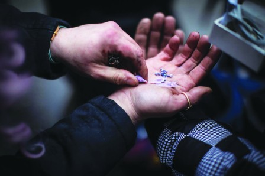

有组织犯罪集团已从过去进口鸦片类药物芬太尼，转为主要在加拿大境内生产。（CBC）
有组织犯罪集团已从过去进口鸦片类药物芬太尼（fentanyl），转为在加拿大境内生产。
一份为加拿大卫生部副部长准备的简报备忘录，详细描述了执法机构观察到这类非法药物的市场变化。备忘录称：「从搜查在卑诗省、安省和阿省的大型超级实验室行动显示，国内供应已完全足够满足国内市场需求。」
加拿大皇家骑警有组织犯罪集团调查组警司库克（James Cooke）说，转变始于2019年。当年5月，中国政府将芬太尼列为管制物，并对其生产和出口实施更多监管。相信这促使芬太尼及其他类汛炝物从非法进口，转为在国内生产。
此趋势在加拿大边境服务局（CBSA）收集的毒品检获数据中亦反映出来。2018年，CBSA查获超过5公斤准备运入加拿大的芬太尼。去年，当局截获的芬太尼不到1公斤。
咸美顿警方毒品和帮派调查组探员达格代尔（Matthew Dugdale）说，新冠疫情加速了有组织犯罪集团转在国内生产。
他说：「在疫情早期，几乎不可能合法或非法地向本国进口任何东西，但犯罪组织亦不会因此而停止销售他们的产品。因此，他们想出在本地开始制造这东西的方法。」
用于芬太尼生产的化学品并不受到管制，可在加拿大采购或合法从中国进口。
库克说：「部分（有组织犯罪集团）使用私人拥有的、有执照的公司来进口制造芬太尼的化学品。」
芬太尼的生产在加拿大迅速发展，部分原因是一些原材料可在国内获得，而制造可卡因或鸦片所需的成分只能在特定情况下才找到。
近年，安省、卑诗省和阿省的警察已捣破多个犯罪集团专门用来生产芬太尼而设置的实验室或「超级实验室」。这种实验室以各种形状和规模出现。如设在农村地区的实验室，会隐藏在货柜箱内。住宅房屋内亦设有实验室。
库克说，大多数实验室需要大量投资，这说明芬太尼市场有巨利可图。
自疫情以来，芬太尼零售价大幅下降达30%。这让警方相信，毒品市场上芬太尼的过剩供应导致了价格暴跌。
加拿大公众卫生局（PHAC）指出，2016年至2023年加国有4.46万人死于服食过量毒品，在2023年死于服食过量毒品的8,000人中，有3/4是涉及芬太尼。